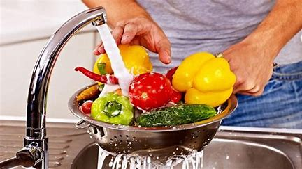

Kitchen hygiene is crucial. Wash hands, clean surfaces, store food properly, and cook at safe temperatures to prevent contamination and ensure safe, healthy meals for everyone.
Wash hands with soap and warm water for 20 seconds, scrubbing palms, fingers, and nails thoroughly.
Dry hands with a clean kitchen towel or paper towel to prevent bacteria and ensure food safety.
Rinse fruits, vegetables, and raw ingredients under running water to remove dirt, pesticides, and bacteria.
Wash leafy greens separately, remove outer leaves, and soak delicate produce in water to remove contaminants.
Always store washed produce immediately in the fridge to maintain freshness and prevent bacterial growth.
Using separate chopping boards for raw meat, vegetables, and fruits prevents cross-contamination and foodborne illnesses.
Different colored chopping boards help prevent cross-contamination by designating specific boards for meat, vegetables, and fruits.
Clean chopping boards with hot, soapy water immediately after use to prevent bacteria buildup and contamination.